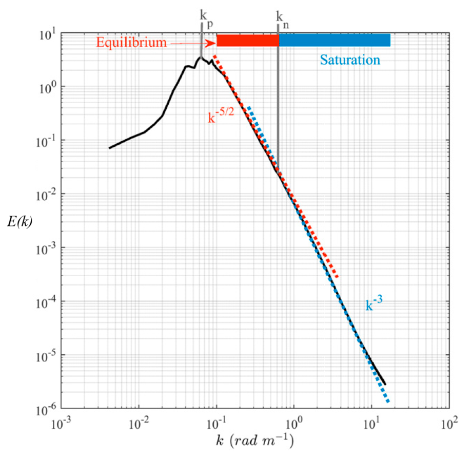

This is a numerical simulation of the strongly local model of wave turbulence developed in this paper. For more details, see also these slides. The horizontal axis is σ = (1/2) log k, where k is the wave number, and the vertical axis is u, a rescaling of the energy spectrum E(k).
Energy is initially injected at large wavelengths (small k) and cascades towards smaller wavelengths, eventually reaching a stationary state interpolating between Kolmogorov-Zakharov (weak turbulence) and Phillips (strong turbulence) scaling.
The physical simulation time, displayed at the bottom of the animation, advances nonuniformly relative to the video time. This is necessary to resolve the increasingly rapid evolution as energy reaches smaller length scales, an example of a finite-time blowup investigated further in this paper. For stronger energy injection or weaker viscous damping (whose onset is indicated by the vertical gray line), the model can also exhibit oscillatory behavior. An example of an oscillatory scaling solution is shown in this animation.
A similar crossover in scaling behavior has been observed experimentally in ocean waves, as shown below in measurements by Lenain and Melville (2017). In this figure the KZ scaling is referred to as "Equilibrium" and the Phillips as "Saturation". Also note that the rescaling of the energy spectrum from E(k) to u(σ) changes the apparent slopes relative to the simulation.
